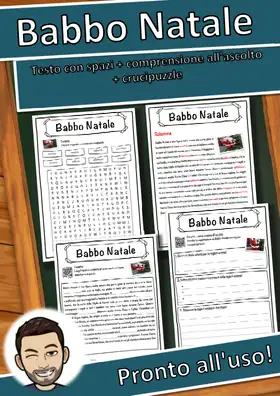
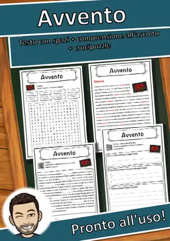
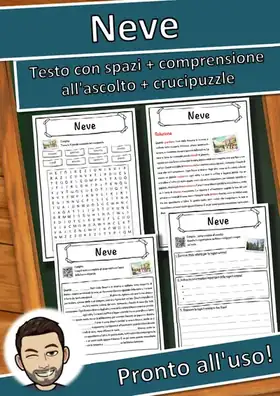
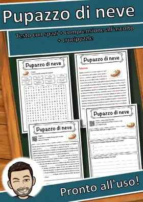
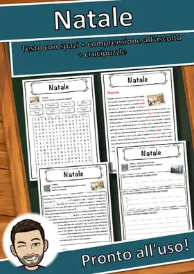
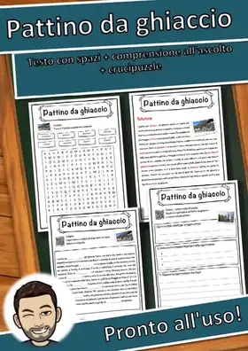
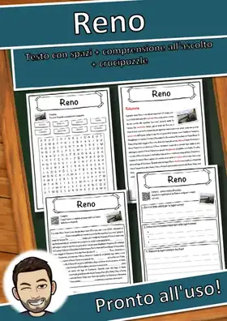
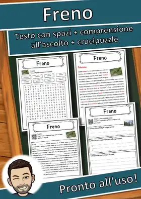
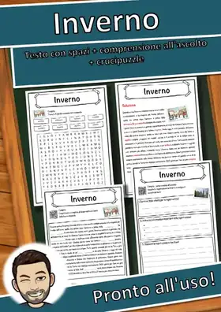
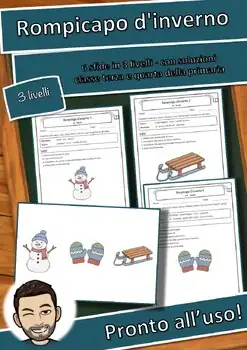

Natale e inverno
Natale, neve, sport invernali e Capodanno: schede per la stagione fredda.
38 materiali
Tema
Classe

Winterthur – Scheda didattica classe quarta e quinta: testo con spazi vuoti e crucipuzzle

Ice – Scheda: testo con spazi vuoti, comprensione all'ascolto e crucipuzzle

Treno a levitazione magnetica – Scheda: testo con spazi vuoti, comprensione all'ascolto e crucipuzzle

Rompighiaccio – Scheda: testo con spazi vuoti, comprensione all'ascolto e crucipuzzle

Pan di zenzero – Scheda: testo con spazi vuoti, comprensione all'ascolto e crucipuzzle

Hockey su ghiaccio – Scheda: testo con spazi vuoti, comprensione all'ascolto e crucipuzzle

Ghiaccio – Scheda: testo con spazi vuoti, comprensione all'ascolto e crucipuzzle

Cascate del Reno – Scheda: testo con spazi vuoti, comprensione all'ascolto e crucipuzzle
Capodanno – Scheda: testo con spazi vuoti, comprensione all'ascolto e crucipuzzle

Babbo Natale – Scheda: testo con spazi vuoti, comprensione all'ascolto e crucipuzzle

Avvento – Scheda: testo con spazi vuoti, comprensione all'ascolto e crucipuzzle

Neve - Scheda - testo con spazi vuoti, comprensione all'ascolto e crucipuzzle

Natale – Scheda: testo con spazi vuoti, comprensione all'ascolto e crucipuzzle

Pupazzo di neve – Scheda: testo con spazi vuoti, comprensione all'ascolto e crucipuzzle

Natale - Scheda - testo con spazi vuoti, comprensione all'ascolto e crucipuzzle

Pattino da ghiaccio – Scheda: testo con spazi vuoti, comprensione all'ascolto e crucipuzzle

Reno – Scheda: testo con spazi vuoti, comprensione all'ascolto e crucipuzzle

Freno – Scheda: testo con spazi vuoti, comprensione all'ascolto e crucipuzzle

Inverno – Scheda: testo con spazi vuoti, comprensione all'ascolto e crucipuzzle

Laboratorio delle fiabe: Biancaneve – Disegni da colorare e domino (GRATIS)

Laboratorio delle fiabe: Biancaneve Pacchetto Plus

Calendario dell'Avvento della classe: 24 finestrelle (classi 1–4) GRATIS

La storia del Natale a domino: 2 versioni, parole chiave (classi 2–4) GRATIS

Rompicapo di Natale: 6 sfide, 3 livelli (classi 3–4) GRATIS

Rompicapo d'inverno: 6 sfide, 3 livelli (classi 3–4) GRATIS
Benevento
Benevento – Scheda: testo con spazi vuoti, ascolto e crucipuzzle
Giochi d'inverno: Domino d'inverno: immagine e parola – Classi 1–4
Giochi d'inverno: Domino d'inverno: immagine e parola – Classi 1–4
Capodanno: il grande murale di classe – 30 riquadri da colorare, un'opera per tutta la classe
Capodanno: il grande murale di classe – 30 riquadri da colorare, un'opera per tutta la classe
Escape-Room Inverno, italiano classe prima: 6 stazioni (GRATIS)
Escape-Room Inverno, italiano classe prima: 6 stazioni (GRATIS)
Giochi d'inverno: Io ho, chi ha? Il giro di Natale – Classi 1–4
Giochi d'inverno: Io ho, chi ha? Il giro di Natale – Classi 1–4
Giochi d'inverno: Memory d'inverno: immagine e parola – Classi 1–4
Giochi d'inverno: Memory d'inverno: immagine e parola – Classi 1–4
Giochi d'inverno: Non dirlo! Parole di Natale – Classi 1–4
Giochi d'inverno: Non dirlo! Parole di Natale – Classi 1–4
Laboratorio delle fiabe: Biancaneve – Disegni da colorare e domino, classi 1–4 (gratis)
Laboratorio delle fiabe: Biancaneve – Disegni da colorare e domino, classi 1–4 (gratis)
Laboratorio delle fiabe: Biancaneve – Pacchetto Plus con domino, leggi e incolla, testo, classi 1–4
Laboratorio delle fiabe: Biancaneve – Pacchetto Plus con domino, leggi e incolla, testo, classi 1–4
Rompicapo d'inverno: 6 sfide sulla neve in 3 livelli (classi 3–4 primaria)
Rompicapo d'inverno: 6 sfide sulla neve in 3 livelli (classi 3–4 primaria)
Calendario dell'Avvento della classe: 24 finestrelle, carte idea e piano (classi 1–4)
Calendario dell'Avvento della classe: 24 finestrelle, carte idea e piano (classi 1–4)
Rompicapo di Natale: 6 sfide in pasticceria in 3 livelli (classi 3–4 primaria)
Rompicapo di Natale: 6 sfide in pasticceria in 3 livelli (classi 3–4 primaria)
La storia del Natale a domino: 2 versioni con parole chiave e frasi (classi 2–4 primaria)
La storia del Natale a domino: 2 versioni con parole chiave e frasi (classi 2–4 primaria)
Nessun materiale trovato: prova con un'altra parola o un altro filtro.